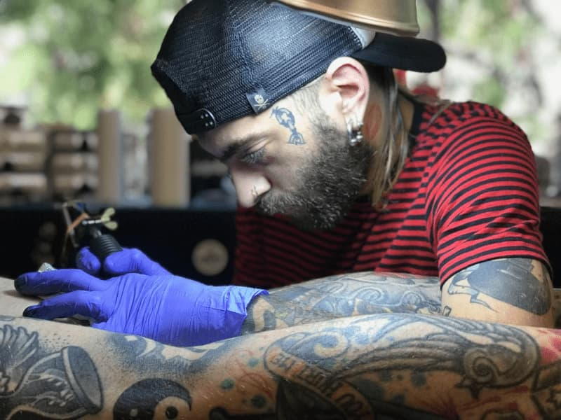
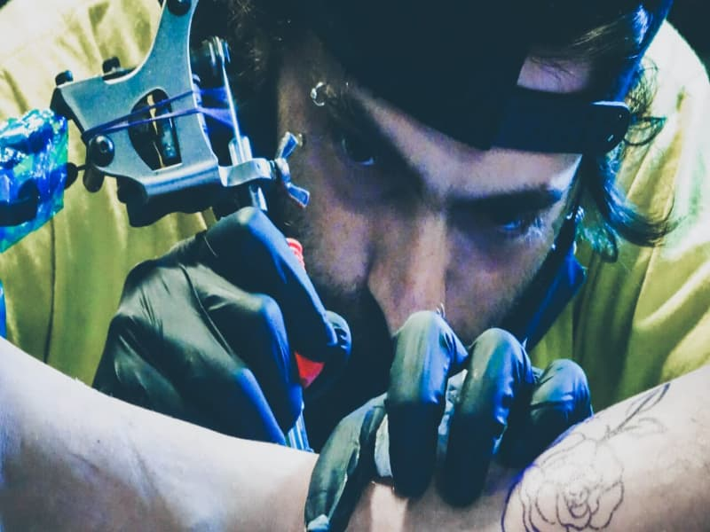
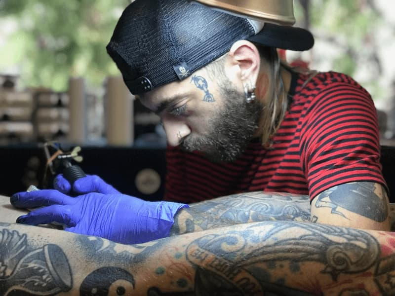
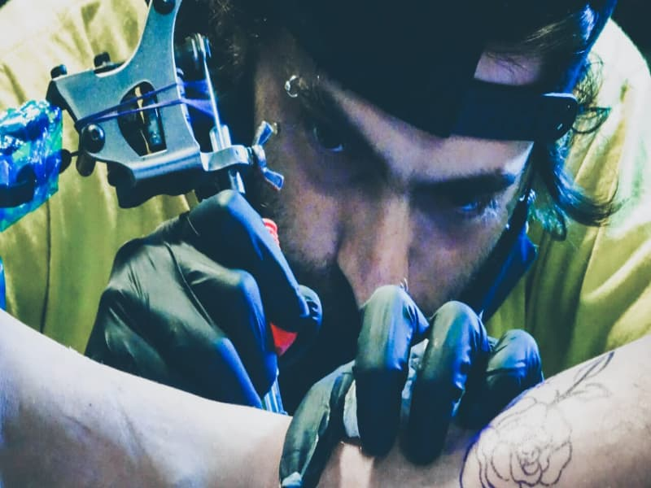

Hola, soy Maty
 



Mis trabajos


Preguntas frecuentes
-
¿Cuánto puede salir mi tatuaje?
El precio de cada tatuaje varía según el tamaño y varios factores más. Si te interesa averiguar por un tatuaje en particular, podés contactarte conmigo haciendo click en "Quiero un tattoo" o por mensaje privado en mis redes sociales
-
¿Cómo solicito un turno?
Podés utilizar el formulario de contacto haciendo click en el botón de "Quiero un tattoo" en la esquina superior derecha, o comunicate por mis redes sociales. Podes encontrar enlaces a mis redes debajo de esta sección.
-
¿Qué debería hacer antes de una sesión?
Presentarte bien descansado, bien hidratado, comer bien antes de venir. Si te vas a tatuar un área donde hay vello corporal y te es posible afeitarte, mejor. Recordá vestirte adecuadamente, con ropa suelta y que permita el acceso a la zona.
-
¿Puedo traerte un dibujo para tatuarme?
¡Por supuesto! Siempre tené en cuenta que quizás el dibujo puede no coincidir con mi estilo, y para evitar inconvenientes puede que te derive con otro tatuador. Por si acaso, adjunta una imagen del dibujo que querés al momento de hacer tu consulta junto con el resto de la info.